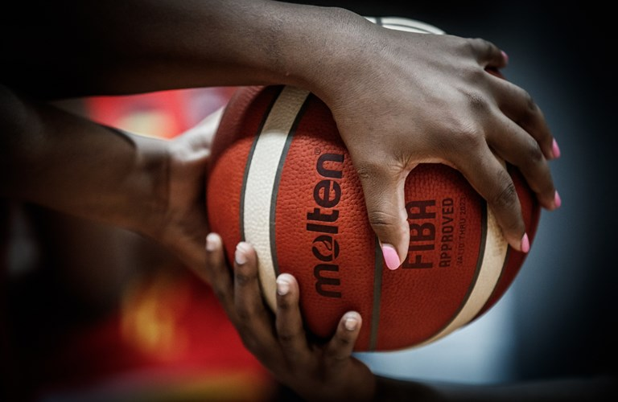

En este blog hablaré acerca del basketball y del impacto que tiene en nuestra sociedad.
Desarrollo
Últimamente, acompañado de mis amigos, he disfrutado de muchas "retas" de basketball y me he
interesado poco a poco en el deporte. Por lo que me he dado cuenta que es un deporte que
tiene mucho en la sociedad, principalmente en Estados Unidos, pero eso no le quita
importancia. Ya que es un deporte reconocido a nivel mundial.
En base a mis investigaciones, me pude dar cuenta del gran impacto que tiene este deporte.
Por lo que en este blog hablaré un poco sobre él.
Motivación
Mi Motivación para realizar este blog acerca del basketball es mi interés repentino por el
deporte y la sopresa que me llevé al enterarme del gran impacto que tiene alrededor del
mundo.

wallpaper basketball.
Ranking
27/01/2022
Top 10 equipos de basketball
Se realizará un top de los 10 mejores equipos de basketball.
Golden State Warriors
Phoenix Suns
Utah Jazz
Miami Heat
Memphis Grizzlies
Cleveland Cavaliers
Milwaukee Bucks
Boston Celtics
Brooklyn Nets
Dallas Mavericks
wallpaper basketball.
Sitios oficiales
27/01/2022
5 sitios oficiales de equipos de basketball
Se realizará un listado con links a páginas oficiales de equipos de basketball.
El video me gustó y dice muy bien lo que es el basketball.
Investigación
23/01/2022
Futbol y su economía
El fútbol, ya se sabe, es un gran negocio. Pero, ¿Cuánto genera en México?
¿Cuál es su efecto en la economía en general? ¿Quiénes son beneficiados?
Esas respuestas se encuentran en el primer estudio para conocer el impacto
económico del fútbol en el país, que la Liga Mx encargó al Grupo de
Economistas y Asociados (GEA). Entre los hallazgos, se explica que por cada
peso generado por la industria del fútbol, una cantidad igual se produce en el
resto de la economía. El valor de ventas relacionados directamente con el
negocio del fútbol fue de 55 mil 800 millones de pesos, pero sus efectos en el
resto de la economía son mayores; de modo que la producción final es de
alrededor de 114 mil millones de pesos anuales, lo que equivale al 0.4 por
ciento del valor de producción total en México.
1
Evolucion del futbol
El fútbol ya ha cambiado. Los equipos siguen formando parte del patrimonio
cultural y sentimental de las ciudades y las selecciones, que siguen
despertando pasiones, se pueden considerar un símbolo nacional más. Pero
más allá de esta dimensión cultural, las últimas décadas han estado dominadas
por la relevancia de la dimensión económica y mediática de este deporte. Los
paralelismos entre la economía, las finanzas y el fútbol son evidentes. Como
negocio financiero, la economía del fútbol no ha sido ajena a las condiciones
económicas mundiales, sobre todo su clase media, los clubes medios. El fútbol
también se vio obligado a vender activos, realizar una devaluación interna y
apoyarse en las exportaciones. Sabemos que los ingresos provienen de la
recaudación en los estadios, los patrocinadores y los derechos de televisión,
pero no siempre es fácil descifrar las lógicas e intereses que se esconden detrás
de ellos.
2
Gestion del futbol
El fútbol es, en teoría, un negocio bastante sencillo de gestionar. La mayoría
del presupuesto se conoce al inicio de la temporada. Los ingresos provienen de
la taquilla, los derechos de televisión y los patrocinios. Los gastos son salarios,
gastos operativos y amortización de jugadores. Es fácil: no gastar más de lo
que se va a ingresar. Con un pequeño problema: los datos muestran que, en
promedio y a medio plazo, el rendimiento de un equipo está directamente
relacionado con la masa salarial. El mercado de jugadores es bastante
eficiente, con pocas excepciones. Hay pocos entrenadores que añadan valor a
medio plazo, según Stefan Szymansky, de Soccernomics, el más notorio Sir
Alex Ferguson. La premisa está clara: Gasta más, ficha mejores jugadores,
gana más partidos. Pero el fútbol también presenta discontinuidades:
clasificarse para la Champions (o subir a primera, como el Éibar) aumenta los
ingresos de manera radical. Bien gestionado, el equipo puede consolidar su
nivel fichando mejores jugadores. Desciende y es un desastre financiero, los
ingresos se colapsan, y lograr el ascenso es un proceso arduo y lento (en
ausencia de un propietario rico que financie un mayor presupuesto). 3
.png) El mundo y la
canasta
El mundo y la
canasta Ranking
Ranking
 Sitios oficiales
Sitios oficiales Que es el basketball?
Que es el basketball? Video
compu
Video
compu Meme
Meme